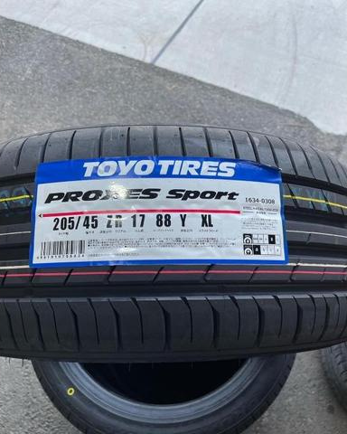
サイズで相談新品タイヤ販売
ふだん使いからスポーツまで。サイズと予算から一緒に選びます。
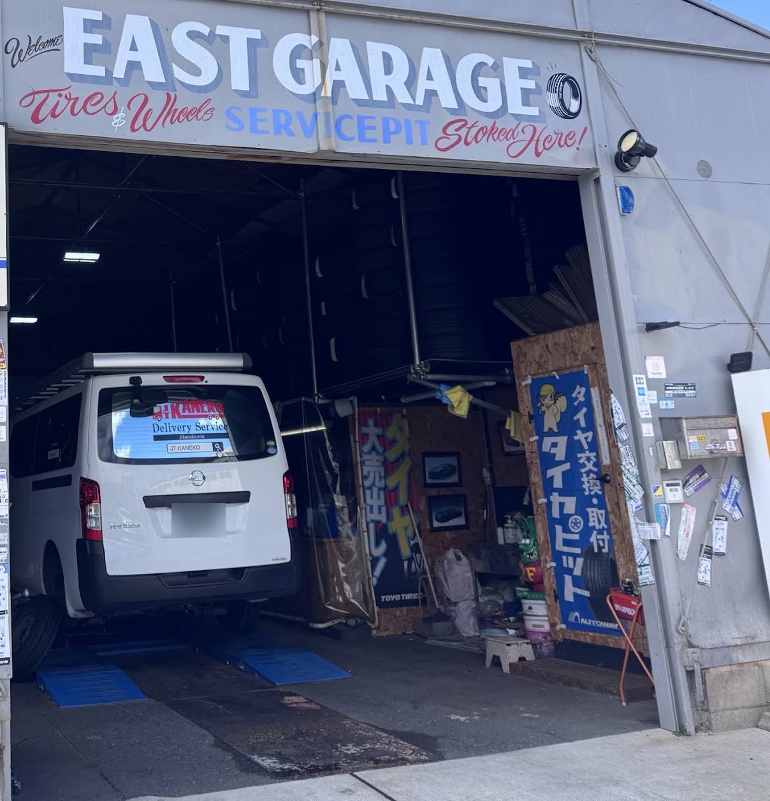
豊橋市小畷町 ｜ タイヤ・ホイール専門店
新品・中古の販売、買取、持込タイヤの交換・取付。軽トラから欧州車まで、豊橋市小畷町のピットでやってます。
10:00–19:00 ・ 日曜定休
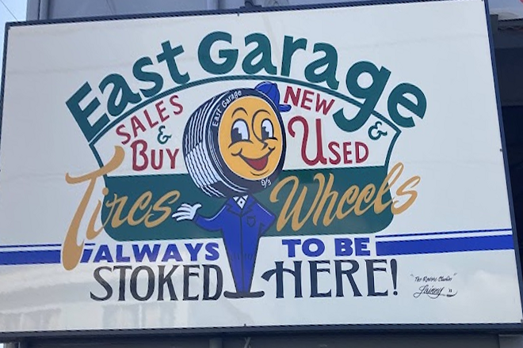
新品も中古も、交換も買取も。ぜんぶ一つの店で。

サイズで相談ふだん使いからスポーツまで。サイズと予算から一緒に選びます。
 在庫は Instagram
在庫は Instagram状態を見て値段をつけた中古品。掘り出し物は Instagram で。
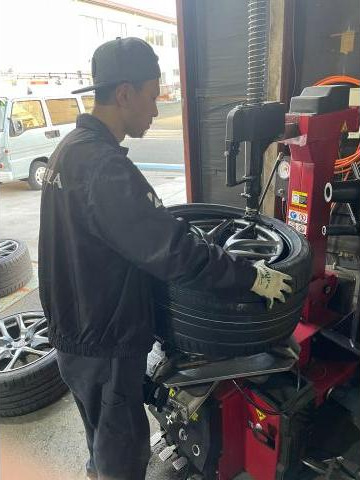
¥2,090〜／本通販で買ったタイヤの持込交換から、ホイールの組替え、バランス調整まで。
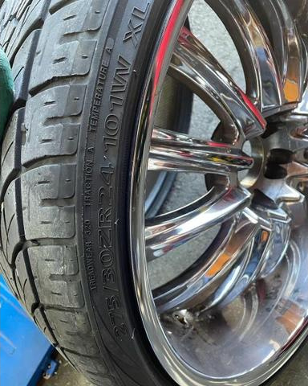
まずは DM使わなくなったタイヤ・ホイール、買い取ります。まずはお電話か Instagram の DM で。
デントリペア（へこみ）も ¥16,500〜 ・ 写真でDM見積り
タイヤ1本あたり・税込
タイヤピット掲載の基本料金（2026年10月時点）。特殊サイズ・ランフラット等は別途。タイヤ代は含みません。最新はお電話で。
廃タイヤ処分 ¥550／本 バルブ交換 ¥275／本
現金・カード・PayPay（ローン不可）
電話で聞く軽トラからクラシックカー、欧州車まで。ふだんの一台も趣味の一台も、同じ青いリフトに乗せています。
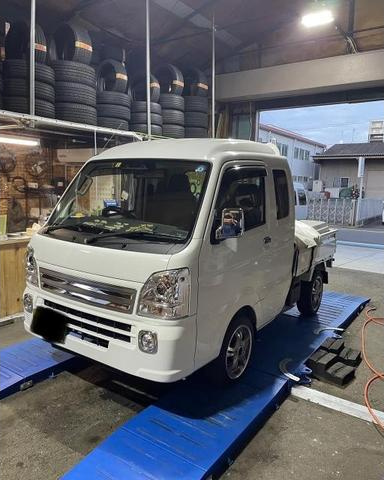
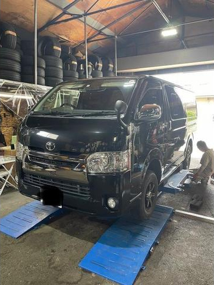
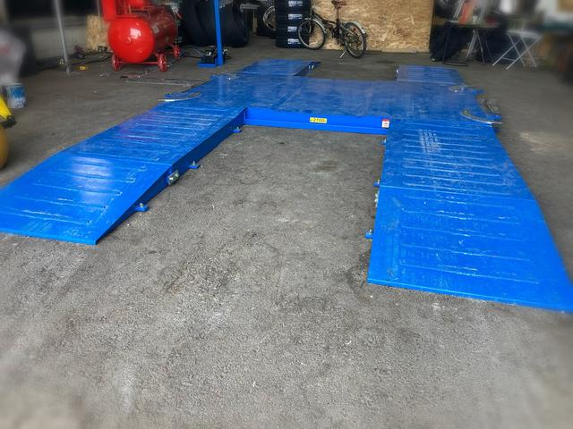

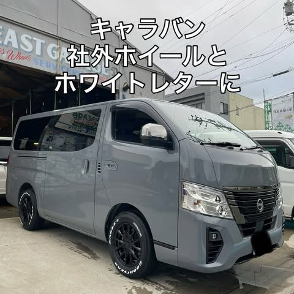
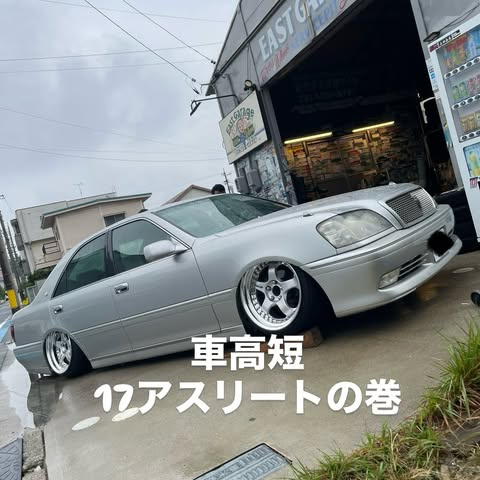
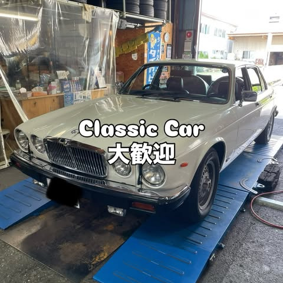
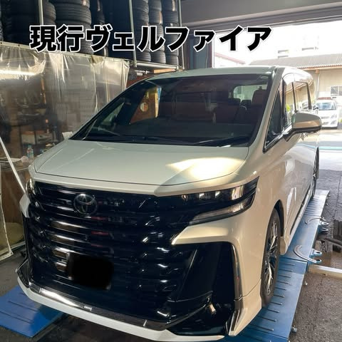
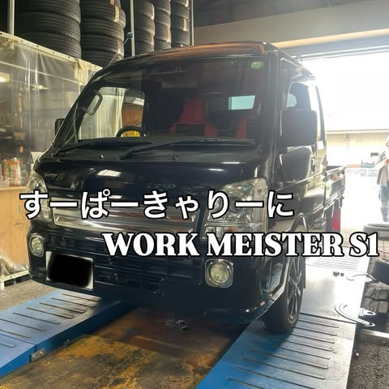
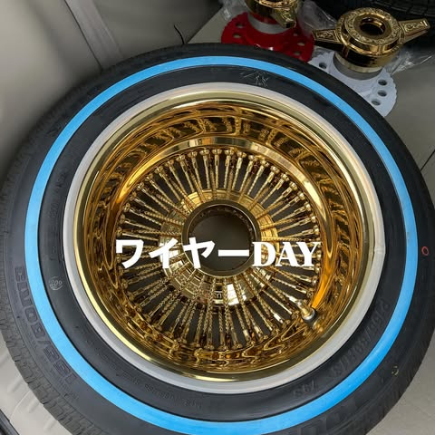
← 横にスクロール

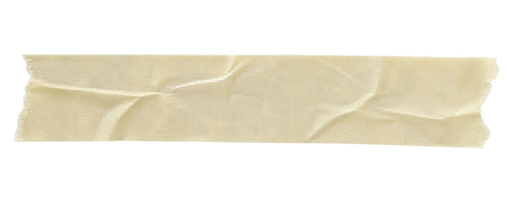
2022年、豊橋市小畷町に開店。看板は手描き。青いリフトにも絵が入っています。OSBの壁と木のカウンター、タイヤチェンジャーとバランサー。持込交換から中古ホイール探しまで、ひと通りやってます。
早くて安くてGOOD
作業も早く助かりました。
Google・タイヤピットのクチコミより